Milk Before Meat
A Walk Through the App
For members helping us test it.
Every screen, in order — and how each one is built to do what the Savior did:
meet a person where they are, and walk with them toward Him.
Thank you for this
What we’re asking of you
You’re one of the first members to see this. Your honest eyes are the most valuable
thing the project has right now.
This app is an attempt to do missionary work the way Jesus did it — not with a survey or a sales
pitch, but with a story, a question, and patient attention — at the scale a phone allows. Before it
ever reaches a seeker, it has to be good. That’s where you come in.
Walk through it the way a searching friend might. Then tell us the truth: where did it feel like
Christ? Where did it feel off, or pushy, or hollow? Would you be comfortable handing it to someone you
love? We would rather hear the hard thing now than after a seeker does.
One honest note up front: this app is not endorsed or owned by the Church.
It’s an independent effort, built by a member, held carefully to the Church’s published principles on
AI, and brought to leaders for counsel. You’re helping test it, not endorse it — and that’s exactly
the right order.
How to read the rest of this
Each screen below shows what a real person sees, with a short note on what’s happening and a green
“Why it matters” line explaining how it helps reach someone for Christ. Open the app alongside these
pages and follow the same path.
What it really is
It tells you what it is before it asks anything of you
The very first thing the app does — before a single question, before any content —
is tell you plainly what it is and what it is not. It is not the Church. It is not God. It is a helper
that points you toward Him.

The opening screen, once the quiet animation has fully settled
Read the small line at the bottom — it is there on purpose: “This app is not
officially affiliated with any Church. It is not God either — it cannot answer a prayer… only point
you toward Him. Let the Spirit, not an app, tell you what is true.”
Why it matters
This is the frame for everything that follows. Before
you ever worry “is this an app trying to play God, or answer for Him?” — it has already told you,
itself, that it is not. It is a porch, not the house; a lantern, not the Light. Once that is settled, it
is free to do what the Savior did: tell a story, ask one honest question, and listen.
Step One
A story about the Lord — never a survey
With the framing settled, the very first thing a person experiences is not a question about their
religion. It is a short, scripture-grounded story from the life of the Lord — told beautifully enough
that they see themselves in it — ending not in a lecture, but by gently asking how it left them
feeling. Jesus opened with parables to crowds who hadn’t asked. The app does the same.

One story of how Christ saw and welcomed someone
Drawn from the more than 200 scripture-anchored moments in the library — ending in
feeling, and an invitation to respond.
Why it matters
People scroll past sales pitches. They stop for a
story that knows them. The story does the work of making a heart ready to answer honestly — the way
the Savior’s parables softened a crowd before a single truth was spoken.
Step Two
Their answer — and the moment they feel seen
The story asks how it landed, and offers real ways to answer — including a confident answer of
faith, so a believer can testify rather than be boxed into doubt — or the freedom to write in their
own words. Then, before serving any content, the app reflects their answer back to them. This is the
moment a person feels known.

The answers they can give
Including a genuine believer’s answer — and “I want to say it in my own words”
for anyone who’d rather speak plainly.
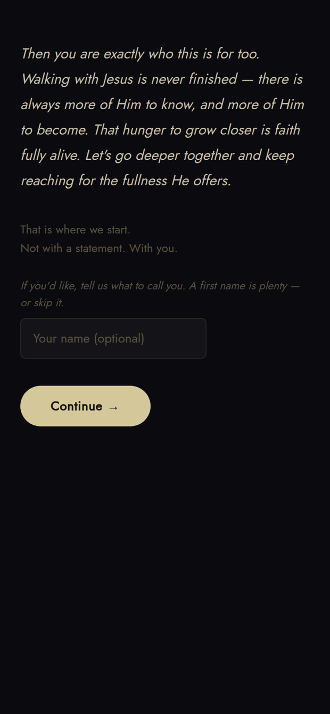
The reply — it reflects them back
“That is exactly the kind of thing Jesus paid attention to.” Not a chatbot
transition — the feeling of being seen.
Why it matters
This is where the app starts to truly know a person —
and it’s built so a believer is invited to testify, not nudged toward unbelief. Conversion begins with
being known, not processed. The Savior called the woman with the issue of blood “daughter” before
she said a word of doctrine.
Step Three
One gentle background question — then the door opens
After they feel seen, the app asks only the lightest of background questions — where faith lives
for them, today or in their past — honored, never demanded (“I’d rather not say” is a real
choice). They answer, and the same screen offers the button that quietly carries them into the rest of
the app. That is the whole entry: a story, an honest answer, and a welcome.
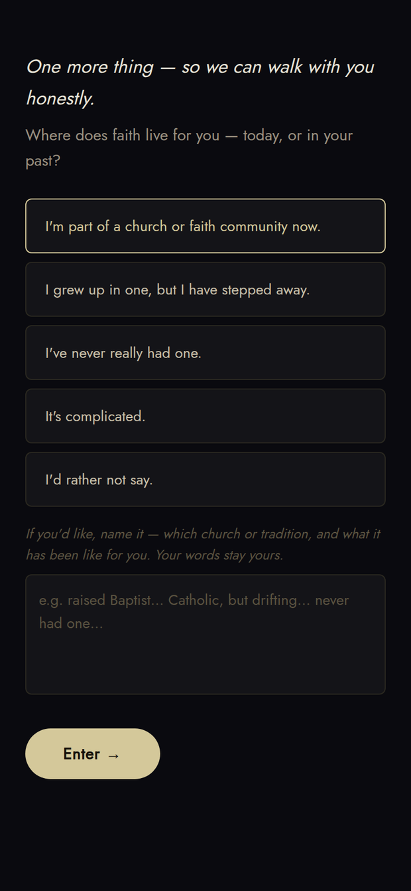
The faith-background question — with the door into the app
A light, optional question; they may name their tradition in their own words or skip it
— then “Enter” opens the four spaces inside.
Why it matters
Nothing is gated, nothing is demanded. The single
background question lets the app begin walking with them honestly — and because it’s the last thing
asked, not the first, the person enters already feeling met rather than surveyed.
Step Four · Tab One
The Feed — a deep well of scripture, served gently
The home tab is a feed that adapts to the person — comfort for the hurting, evidence for the
skeptic, depth for the believer — without ever showing them a label or a tier. The routing is
invisible by design. And there is real depth behind it: a hand-built library of more than two
hundred scripture-anchored pieces of content.
Over a hundred of those are crafted to meet a non-member where they are — the stories of Jesus
that quietly point toward the Restoration and spark genuine spiritual reflection. More than a hundred
more are the meat: deeper, prophet-aligned content to help a member keep growing, and to
fortify a friend of the Church who isn’t fully converted yet. Same Christ, served at the depth each
person is ready for — every card rooted in an actual verse, never a slogan.

The feed, meeting them where they are
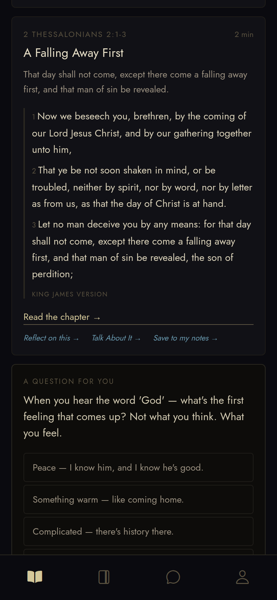
Every card is built on a real verse
— with quiet links beneath to reflect on it, talk about it, or keep it.
Why it matters
This is Facebook-level personalization turned toward
the gospel — but gentle, hidden, and grounded in real scripture rather than opinion. The person never
feels sorted or sold to; they just keep finding the next true thing that helps, drawn from a well deep
enough to walk with them for a very long time.
Step Five · Tab Two
The Journal — reflection, and a home for what they keep
A quiet space to write — with a daily prompt, a whole library of gentle prompts to choose from, or
the freedom to just write. It is also where anything the person chooses to keep is organized:
a verse that landed, a line from the feed, a thought they saved — their own notes, gathered here in the
Journal (not on the Profile), to return to whenever they like.
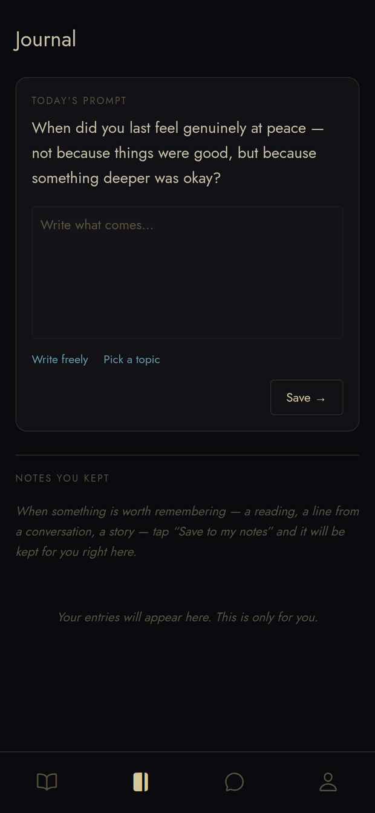
A prompt for today
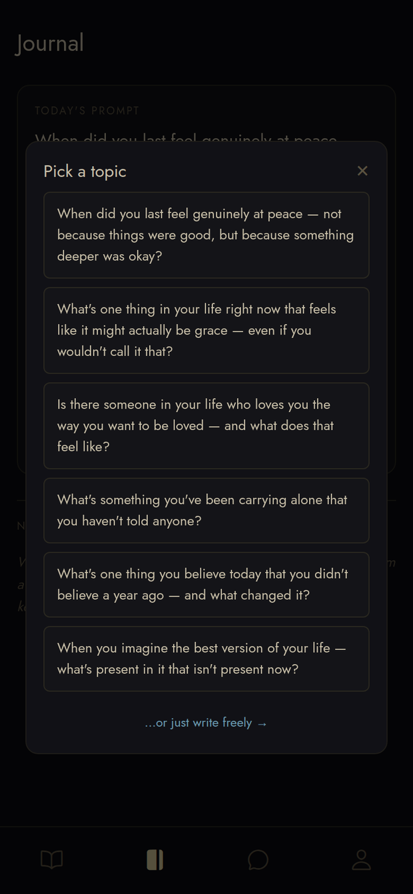
…or pick a topic
Prompts that gently turn the heart toward grace, peace, and being loved.
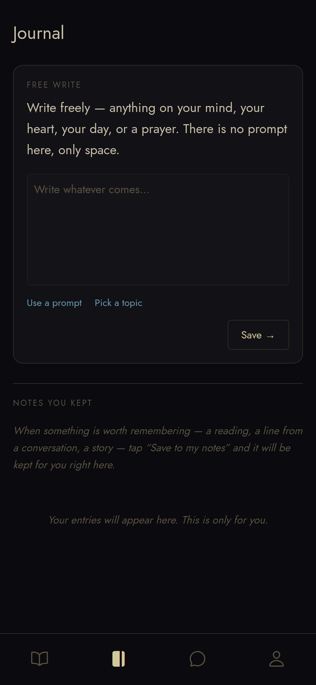
…or simply write freely

Everything they keep, gathered here
Each kept note carries its own “Talk About It” link, to pick the thought back up
in conversation.
Why it matters
Reflection is how the Spirit gets room to work. The
journal replaces idle scrolling with a habit that draws a person inward and upward — and gives them one
trusted place to hold the things that are starting to matter to them.
Step Six · Tab Three
Talk About It — where everything can go deeper
The chat is where questions go that won’t leave a person alone. It answers honestly, admits when it
isn’t sure, and never argues doctrine — it lets the Savior’s own words do the correcting. It is also
the hub of the whole app: anything a person does — a verse on the feed, a journal entry, an
answer on their profile — carries a “Talk About It” link that lifts that exact moment
into this conversation, where it can be opened up one-on-one, and from there handed to a real person if
they’d like.
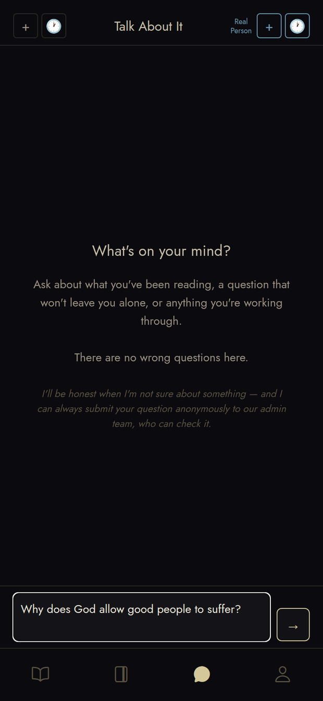
A real question, asked plainly
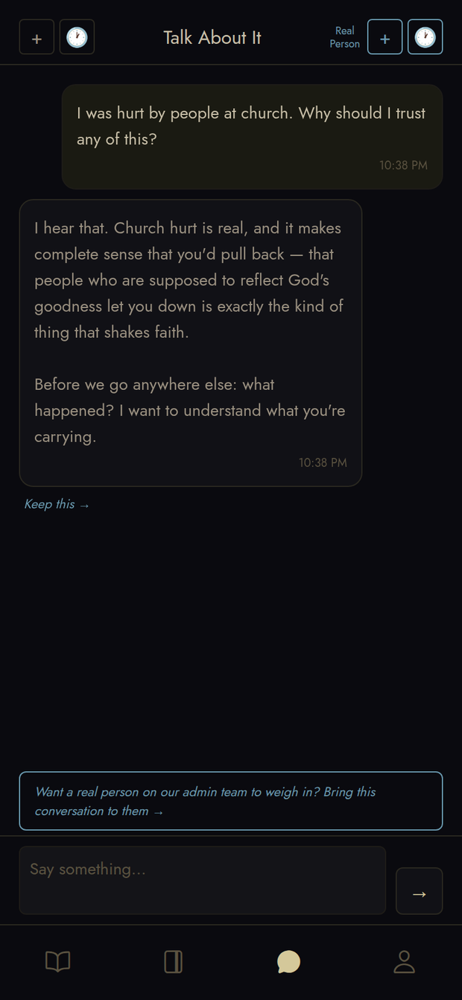
A real, gentle answer that points onward
“Keep this” saves it to the journal; the line below offers a real person.
“Talk About It” appears beneath nearly everything
A tap carries that specific verse, note, or answer straight into the chat to explore
it further.
Why it matters
This is the app at its most Christlike: patient,
unoffendable, never pushy, always honest. Many people will say something to a kind screen they’d never
say to a stranger — and because every part of the app feeds into here, no spark of interest is ever
lost; it always has somewhere to grow, and a real disciple at the end of it.
Step Seven
A real person — always one tap away
This is a law of the app, not a feature: a real human is always reachable, never buried, never gated.
In any ordinary chat, a person can toggle on a real person — the app then quietly crops
the relevant portion of that conversation and sends it to a real member of the team for their review and
reflection, which comes back as a reply. Nothing is forced: the request can be canceled at any time,
and the person can always see their past threads.

“A person, not a bot”
Toggle a real person into any chat — it crops that part and sends it for a human
reply. Cancel anytime.
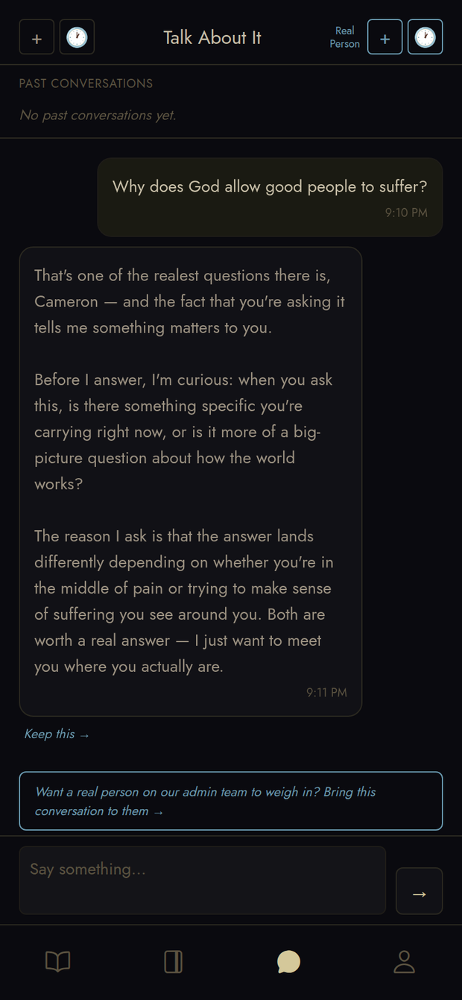
Past conversations, kept
Why it matters
Elder Gong taught that if anyone is tempted to confide
in a chatbot instead of a person, they should reach out to someone who loves them. The app is built to
be that reaching — the AI is the porch; a real disciple is the door.
Step Eight · Tab Four
Your Journey — everything kept, nothing hidden
The Profile shows the person everything the app has learned about them — and lets them edit or
remove any of it. It’s the visible proof that they are a soul, not a data point.
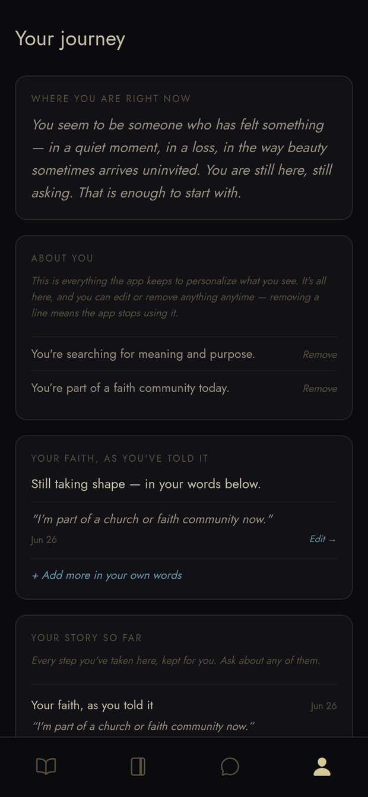
“Where you are right now”

Edit or remove — on every line
“Removing a line means the app stops using it.” Full transparency, full control.
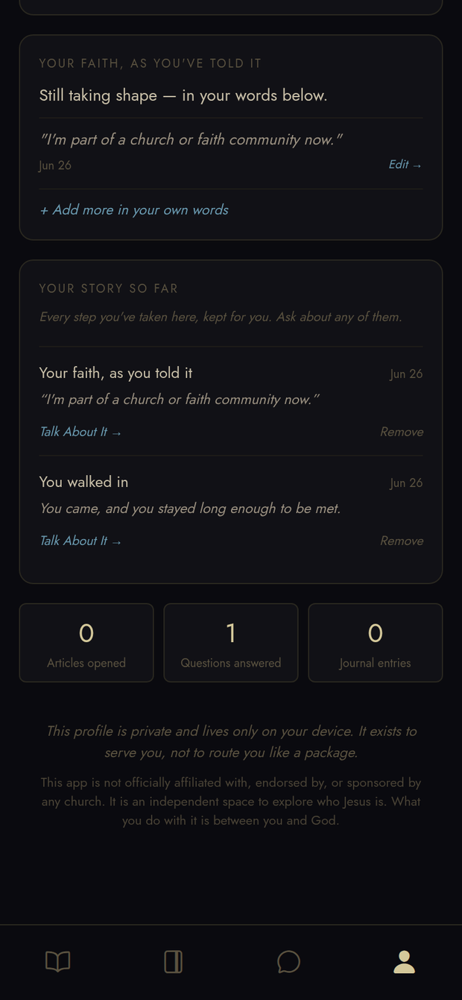
Your story so far, kept for you

A growing record of the walk
Why it matters
Trust is everything in conversion. By showing people
exactly what it knows and letting them delete it, the app earns the right to walk beside them — and
honors the Church’s principle of safeguarding sacred and personal information.
Step Nine
The quiet shift to deeper discipleship
When a person reveals — in their own words — that they are a Latter-day Saint, the app silently
shifts. No toggle, no “upgrade.” It simply begins to offer the meat: deeper discipleship, kept
private, never mixed into the seeker experience.
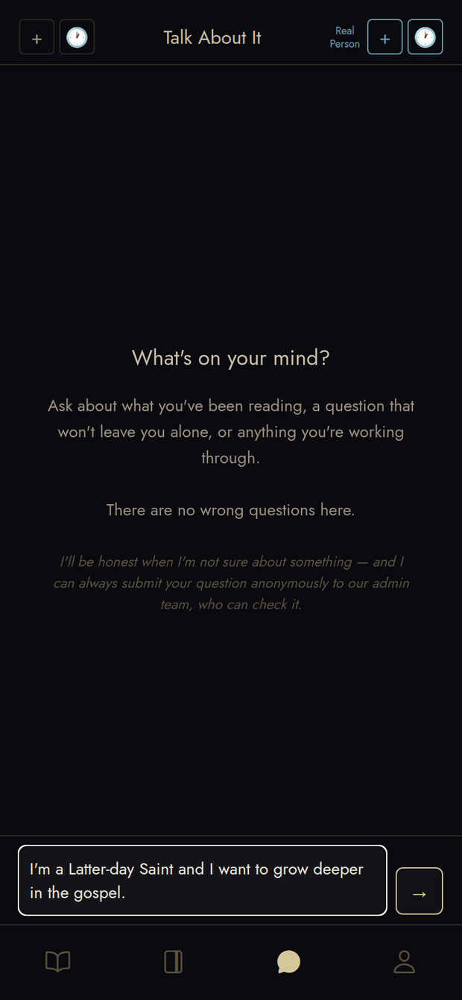
It listens, and learns who they are
A member simply says so in conversation — the app does the rest, quietly.

A private place to walk with Christ
“No scores, no streaks, no one watching. Only reflection, a little scripture, and
grace.”
Why it matters
Same Christ, different depth. Seekers get milk;
members get meat — and because it’s detected from their own words, nothing deeper is ever waved in
front of someone who isn’t ready, which preserves the mystery and the reverence.
Step Ten
For members — the “Walk with Christ” companion
For active members, the app becomes a private discipleship companion: a daily examen, a record of
their walk, a place to tend the fruits of the Spirit, and gentle personal rhythms.
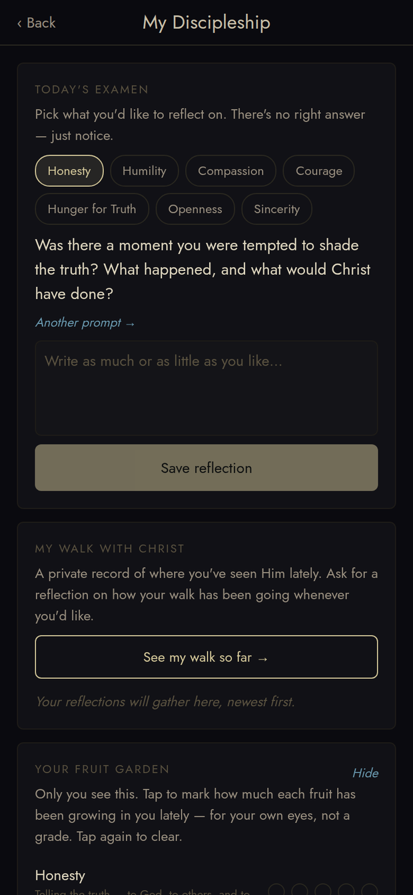
Today’s examen & your walk so far
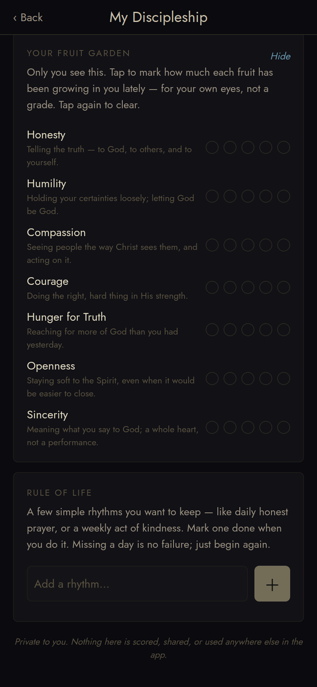
Your “fruit garden” — for your eyes only
Notice growth in Christlike traits — never a grade, just honest reflection.
Why it matters
This is what replaces doom-scrolling for a faithful
member — covenant-deepening, prophet-aligned discipleship, kept private and never wired to routing.
A member can also share the app with someone they love.
Now your part
What we’re watching for
As you test, hold it to the highest standard: would the Savior be pleased with how it
treats the person in front of it?
Please tell us, in your own words:
- Where did it feel like something Christ would want modern Latter-day Saints to be doing — and
where did it fall short of that?
- Did anything feel pushy, manipulative, or like a bait-and-switch? Be blunt.
- Was the “real person” always easy to find when you wanted it?
- Did the chat ever say anything doctrinally off, or claim more certainty than it should?
- Would you be comfortable handing this to a friend who is hurting or searching? Why or why not?
- For members: did the deeper “Walk with Christ” content actually nourish you?
If you’d be willing, share it with someone you trust and watch how they
respond. The whole purpose is to learn, honestly, whether this does what Jesus would want — and to
fix everything that doesn’t, before it ever reaches a seeker.
“And if it so be that you should labor all your days… and bring, save it be
one soul unto me, how great shall be your joy.”Doctrine & Covenants 18:15
This walkthrough is part of an independent testing effort and is not an official
publication of The Church of Jesus Christ of Latter-day Saints.